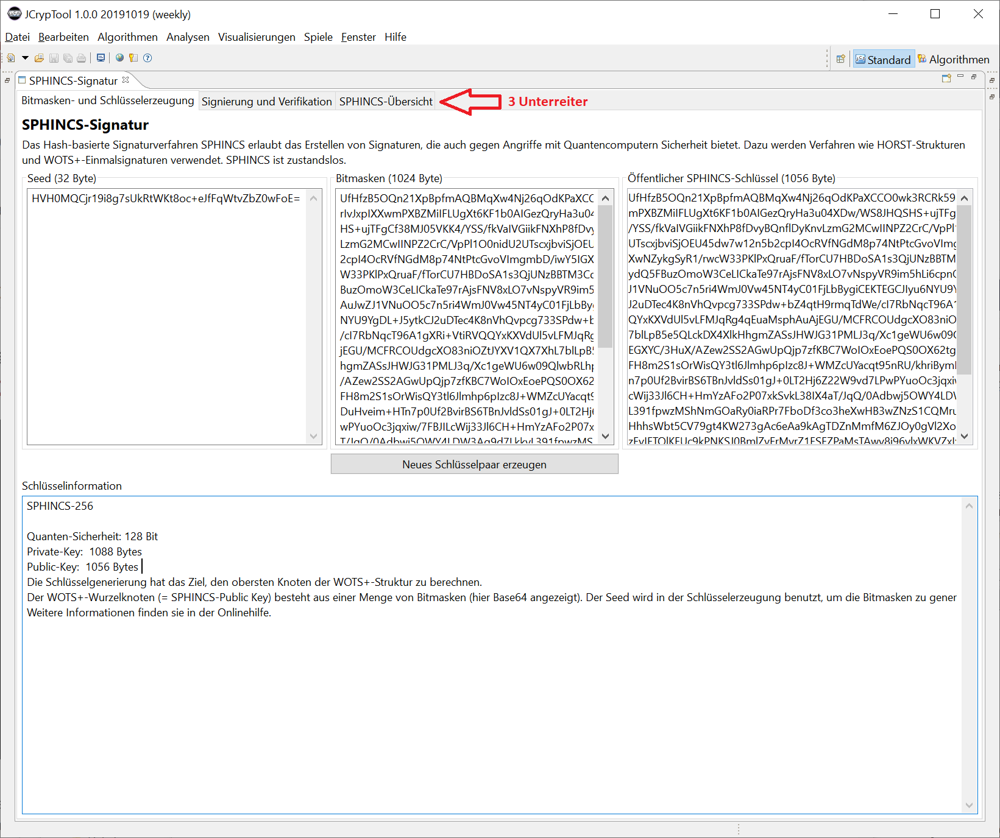
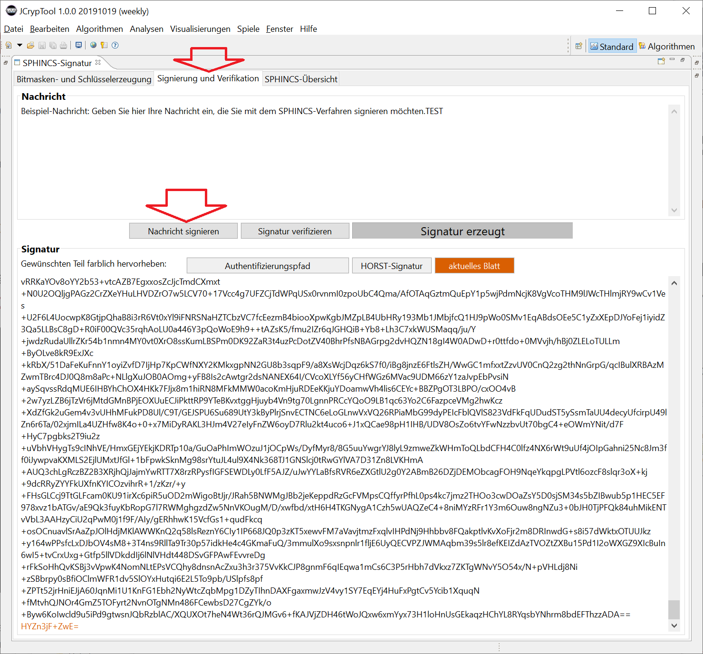
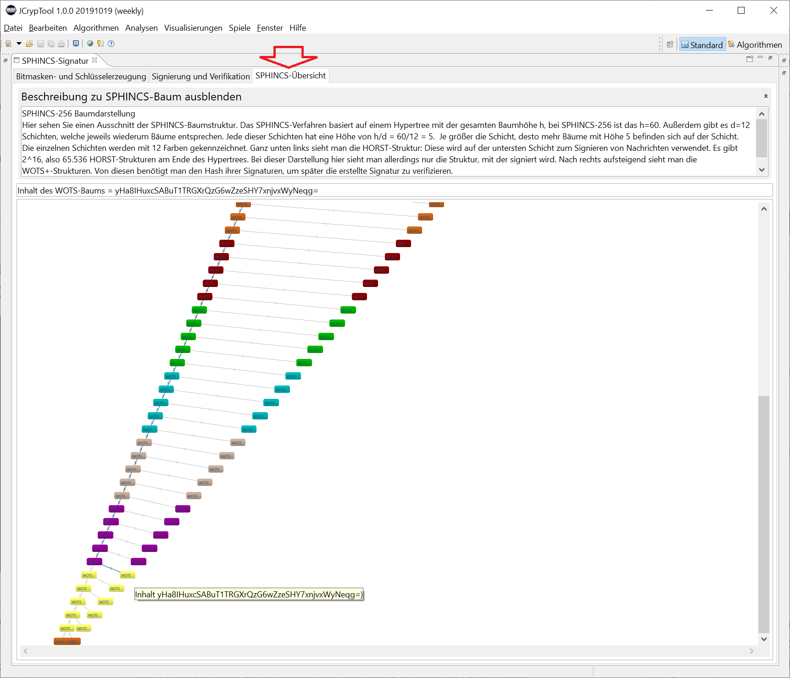

In diesem Plugin wird das Quantencomputer-resistente Signaturverfahren SPHINCS (in der zur Standardisierung eingereichten Variante SPHINCS-256) visualisiert.
Das Plugin lässt sich über das Menü Visualisierungen oder über den Krypto-Explorer im Reiter Visualisierungen starten.
SPHINCS ist sicher, auch wenn Quantencomputer funktionieren: Deshalb zählt es zu den sogenannten Post-Quantencomputer-Verfahren (PQC). Mit SPHINCS-256 können ebenso wie mit Merkle-Signaturen sichere digitale Signaturen erstellt werden. Eine gute und aktuelle Übersicht zu PQC-Verfahren findet sich in der Wikipedia [1,2]. WOTS in der Variante WOTS+ ist ein Baustein sowohl von XMSS wie von SPHINCS.
SPHINCS [7,8] erreichte beim (im Dezember 2016 gestarteten) NIST-Wettbewerb für PQC-Verfahren (NIST PQC competition) [3,4] inzwischen in die 2. Runde (Stand 30.1.2019, Variante SPHINCS+).
Die Sicherheit von SPHINCS beruht wie die bei Merkle-Signaturen nur auf der Sicherheit der verwendeten Hashfunktionen und gehört deshalb zu den Hash-basierten Signaturfunktionen (HBS). Im Gegensatz zu Merkle-Signaturen ist SPHINCS jedoch zustandslos, was für die Sicherheit der meisten Anwendungen ein großer Vorteil ist. Generell ist die Schlüssellänge bei QC-resistenten Signaturverfahren (auch Post-Quantum-Signaturverfahren genannt) deutlich größer als bei konventionellen Signaturverfahren.
Das hervorragende Paper [0] von 2014 fasst SPHINCS so zusammen: "Signatures are 41 kB, public keys are 1 kB, and private keys are 1 kB. The signature scheme is designed to provide long-term 2^128 security even against attackers equipped with quantum computers."
Die Abkürzung SPHINCS bedeutet: Stateless Practical Hash-based Incredibly Nice Collision-resilient Signatures.
Bemerkung: Neben dem hier implementierten älteren Verfahren SPHINCS ist in JCT auch das neuere PQC-Verfahren SPHINCS+ aus 2017 implementiert.
1) Übersicht SPHINCS-Struktur
1.1) Visualisierung der SPHINCS-Struktur
1.2) Schlüsselgenerierung
1.3) Signatur-Erstellung
1.4) Verifizierung (Signatur-Prüfung)
2) Bedienungsanleitung
3) Weitere Informationen, Referenzen und Quellen
SPHINCS generiert einen Baum aus mehreren Strukturen, die wiederum wie ein Baum aufgebaut sind. Diese Gesamtstruktur bezeichnet man als Hypertree oder SPHINCS-Struktur.
In SPHINCS gibt es zwei Arten von Baumstrukturen, einmal WOTS+-Strukturen und einmal HORST-Strukturen. WOTS+ ist ein Einmal-Signaturverfahren, das in SPHINCS zum Signieren darunter liegender Strukturen verwendet wird. HORST ist ein Mehrfach-Signaturverfahren, das auf der untersten Ebene zum Signieren von Nachrichten verwendet wird.
Eine SPHINCS-256-Struktur hat die Gesamthöhe h=60. Jede Unterstruktur, sowohl WOTS+ als auch HORST, besteht wiederum aus einem Baum – jeweils mit der Höhe h/d=5, wobei d=12 die Anzahl der Ebenen ist. SPHINCS-256 ist eine Instanziierung von SPHINCS+ (und legt damit diese Parameter fest; in SPHINCS+ als Konzept sind diese Parameter variabel). Das ist analog zu bspw. RSASSA-PKCS1-v1_5-1024-SHA1, einer Instanziierung des RSA-Algorithmus, die genau festlegt, wie RSA zum Signieren zu verwenden ist.
Kudelski Security fasst die Baumstruktur folgendermaßen zusammen (Kudelski Security reichte beim NIST-Wettbewerb "Gravity-SPHINCS" ein, eine Variante von SPHINCS, die – im Gegensatz zu SPHINCS-256 – nicht in die 2. Runde kam):
The SPHINCS signature scheme is not of the simplest kind, and is hard to understand by only reading its informal specification. So instead of trying to explain it fully, we’ll just describe its general structure, which can be seen as the combination of four types of trees:
Die folgende Grafik zeigt den SPHINCS-Hypertree. Dieser Hypertree ist (ausschnittsweise) auch im JCT-Plugin im Unterreiter "SPHINCS-Übersicht" zu sehen. Die unterste der 12 Ebenen wird als "erste" Ebene bezeichnet.


Die folgende Grafik zoomt in einen Teil des obigen Hypertrees hinein: Eine WOTS+-Struktur besteht aus mehreren WOTS+-Public-Key-Knoten, die jeweils ein Schlüsselpaar ergeben:

Jede WOTS+-Struktur ist ein binärer Hash-Baum (binary hash tree) und jede enthält 2^(h/d) = 2^5 = 32 Knoten.
Die folgenden Abschnitte erläutern die 3 Haupt-Operationen genauer. Danach wird die Bedienung des Plugin anhand seiner 3 Unterreiter erläutert.
Die Schlüsselerzeugung des SPHINCS-Verfahrens hat zum Ziel, den Public Key PK des Wurzelknotens (Root) der gesamten SPHINCS-Struktur zu berechnen. Dieser PK ist ebenfalls ein Hashwert.
Ist die Operation der Schlüsselerzeugung abgeschlossen, hat man das WOTS+-Schlüsselpaar der SPHINCS-Gesamtstruktur. Der Public Key dieses WOTS+-Schlüsselpaars ist der Wurzelknoten der SPHINCS-Struktur.
Dazu werden zunächst zwei je 256*256 Bit große, geheime Schlüssel SK_1 und SK_2 erstellt. SK_1 dient zur pseudozufälligen Schlüsselgenerierung. SK_2 wird verwendet, um den Index von sign (Funktion undefiniert eingeführt in [0, Seite 10, zweiter Absatz]; gemeint ist der Index eines OTS-Schlüsselpaars in einem Baum) unvorhersagbar zu machen und um den Hashwert der Nachricht zu randomisieren.
Zusätzlich werden p n-Bit lange Bitmasken Q_i erzeugt, die für jede WOTS+-Struktur und jede HORST-Struktur benutzt werden. Alle Q_i gehen per Konkatenation in den obersten Public-Key (PK des Wurzelknoten) ein. Weitere Details in [0, Seite 10].
Anschließend werden die WOTS+-Schlüsselpaare der einzelnen Ebenen erzeugt. Dazu wird für jedes Schlüsselpaar ein Seed erzeugt, in den die Adresse A des Schlüsselpaars und SK_1 einfließen.
Es gilt:
SPHINCS-Private/Secret Key SK = {SK_1, SK_2, Q};
SPHINCS-Public Key = {PK1, Q}.
Tabelle 1 in [0, Seite 19] zeigt die Größe der Schlüssel in SPHINCS-256:
Private/Secret Key = 1088 Byte;
Public Key = 1056 Byte.
Wieviele Seeds gibt es? Im SK einen, allerdings wird fast alles pseudozufällig aus kurzen Seeds erzeugt.
Wieviele Bitmasken gibt es? 32 256-Bitmasken.
Signiert wird eine Nachricht M mit dem SPHINCS-Private-Key SK.
Dazu wird ein Randomizer, also ein zufälliges R = (R_1, R_2) gebildet und ein randomisierter Message-Digest D aus M, SK_2 und R_1 berechnet. Dieser Hash D wird dann signiert.
Zum Signieren wird das HORST-Schlüsselpaar an der ausgewählten Adresse verwendet. Die HORST-Signatur wird aus einem Seed, dem Hashwert D und HORST-Bitmasken berechnet.
Die ganze SPHINCS-Signatur ("the full SPHINCS signature Σ") beinhaltet neben der HORST-Signatur noch einen Index i, Zufallsbits R_1, einer XMSS_MT-Signatur und einen Authentifizierungspfad (authentication path) durch alle Ebenen. Die XMSS_MT-Signatur besteht aus d WOTS+-Signaturen.
Der Index wird deterministisch ausgewählt, da bei einer Struktur dieser Größe kein zuverlässiger Zufall existiert, der die Indizes bestimmen könnte. Das WOTS+-Schlüsselpaar mit der Adresse A_0 wird verwendet, um den HORST-Public Key zu signieren.
Die SPHINCS-Signatur Σ besteht also aus (i; R_1; σH; σW,0; Auth_A_0;...; σW,d−1; Auth_A_d−1), wobei (σH = HORST-Signatur, σW,i = WOTS+-Signatur).
Die ff. Grafik zeigt das Zusammenwirken der Parameter. Weitere Details in [0, Seite 11].

Zum Verifizieren werden der SPHINCS-Public-Key (also das PK des Wurzelknotens), die Nachricht M und eine ganze SPHINCS-Signatur benötigt.
Zunächst wird ein Hashwert D aus der Nachricht und aus dem (in der Signatur enthaltenen) Zufallswert R1 gebildet: D = H(M, R1).
Der Hashwert D und die im Public-Key PK enthaltenen HORST-Bitmasken Q_HORST werden dazu verwendet, um mithilfe der HORST-Verifikationsfunktion (D, σ_HORST, Q_HORST) den HORST-Public Key zu berechnen. Wenn die Verifizierung der HORST-Signatur, die in der SPHINCS-Signatur enthalten ist, fehlschlägt, dann ist auch die SPHINCS-Signatur ungültig.
Mit der in der SPHINCS-Signatur enthaltenen WOTS+-Signatur wird der Public-Key der ersten WOTS+-Struktur PK_W,0 berechnet. Danach wird das Blatt dieser ersten Ebene berechnet.
Mit diesem Blatt wird der Wurzelknoten (Root_0) der ersten Ebene berechnet. Dieser Vorgang wird bis zur obersten Ebene der SPHINCS-Struktur wiederholt ("repeated for layers 1 to d-1"), jedoch mit zwei Unterschieden:
Diese zwei Besonderheiten werden aber erst ab der zweiten Ebene der SPHINCS-Struktur relevant.
Nachdem der Authentifizierungspfad durchgerechnet wurde, erhält man den Wurzelknoten der Ebene d-1 (Root_d-1). Diesen vergleicht man dann mit dem ersten Element PK_1 im SPHINCS-Public Key PK.
Sind die beiden Schlüssel identisch, gelingt die Verifikation; sind die beiden Schlüssel nicht identisch, so schlägt die Verifikation fehl. Weitere Details in [0, Seite 11 und 12].
Diese Visualisierung erläutert das Signaturverfahren SPHINCS-256 und die dahinter liegende SPHINCS-Struktur. Außerdem können die 3 Operationen Schlüsselgenerierung, Signieren und Verifizieren durchgeführt werden.
In der Instanziierung SPHINCS-256 sind die Parameter d=12, h=60, w=16, n=256 und m=512 schon festgelegt (siehe Tabelle 1 in [0, Seite 19]).
Im 1. Unterreiter werden die Bestandteile der verwendeten Schlüssel (Seed, Bitmasken) und des erzeugten öffentlichen SPHINCS-Schlüssels PK angezeigt. Des weiteren sind unten Informationen zur Schlüssellänge zu sehen. Die erzeugten Schlüssel werden dann im 2. Unterreiter zum Signieren und Verifizieren benutzt.
Bei jedem Drücken des Buttons Neues Schlüsselpaar erzeugen wird erneut ein zufälliger Seed (Bitmasken) generiert und damit ein neuer öffentlicher Schlüssel erzeugt.
Die folgenden Unterreiter 2 und 3 funktionieren erst, nachdem in Unterreiter 1 die Schlüssel erzeugt und der Hypertree aufgebaut wurde.
Im zweiten Unterreiter können Sie eine Nachricht eingeben und dann mit SPHINCS signieren (Voraussetzung ist, dass die Schlüssel im ersten Unterreiter erzeugt wurden). Anschließend können Sie die Signatur verifizieren.
Bitte geben Sie einen Nachrichtentext ein (oder lassen Sie den Standardvorschlag) und drücken dann den Button Nachricht signieren.
Mit den folgenden 3 Buttons können verschiedene Teile der Signatur Σ hervorgehoben werden:
Im obigen Screenshot ist das aktuelle Blatt farblich hervorgehoben, das am Ende der Signatur codiert ist.
Wenn Sie auf den Button Signatur verifizieren drücken, wird die Signatur geprüft und das Ergebnis in der Mitte angezeigt (in grün, wenn Nachricht, öffentlicher Schlüssel und Signatur zueinander passen, die Validierung also positiv ausfällt).
Solange Sie nichts ändern, wird die Verifikation immer erfolgreich sein (ok). Wenn Sie die Nachricht ändern und nochmal den Button Signatur verifizieren drücken, wird die Verifikation nicht erfolgreich sein (dann erscheint das Prüfergebnis in rot).
Die Signaturwerte kann man momentan in diesem Unterreiter nicht ändern. Wenn Sie im ersten Unterreiter nochmal neue Schlüssel generieren, werden diese hier erst genutzt, wenn Sie die Nachricht nochmal signieren.
Der 3. Unterreiter zeigt grafisch einen Ausschnitt des Hypertrees und gibt Informationen über die SPHINCS-Struktur. Steht der Mauszeiger über einem Element, werden dessen Daten als Balloontext (Tooltip) angzeigt. Klickt man auf das Element, werden die Daten zusätzlich in das Ausgabefeld oben unter der Beschreibung ausgegeben.
Die einzelnen Ebenen der Struktur sind farblich gekennzeichnet so, dass man sieht, welches Element welcher Ebene angehört. Mit dem Maus-Rad können Sie in den Baum hinein und heraus zoomen.
Dieses Plugin implementierte nur die SPHINCS-256-Variante. Weitere Varianten sind SPHINCS+ und Gravity-SPHINCS plus deren Instanziierungen.
Auf der offiziellen Webseite gibt es diverse Papers und Präsentationen zum Thema SPHINCS-Verfahren und eine Referenzimplementierung zum Download.
Weitere Informationen zum Thema Post-Quanten-Kryptografie (PQC) und zu SPHINCS-Signaturen finden Sie beispielsweise unter:
Weitere Plugins in JCrypTool zu Quantencomputer-sicheren Signatur-Verfahren: